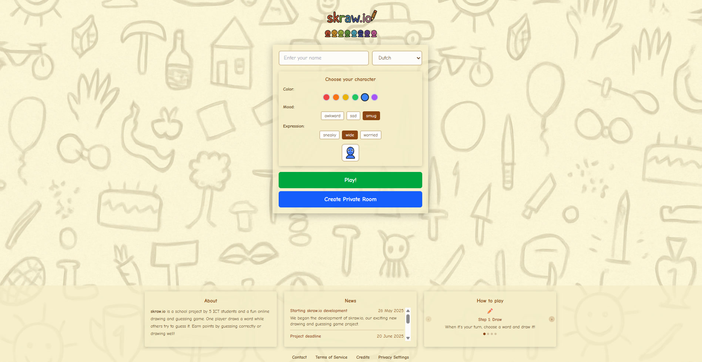
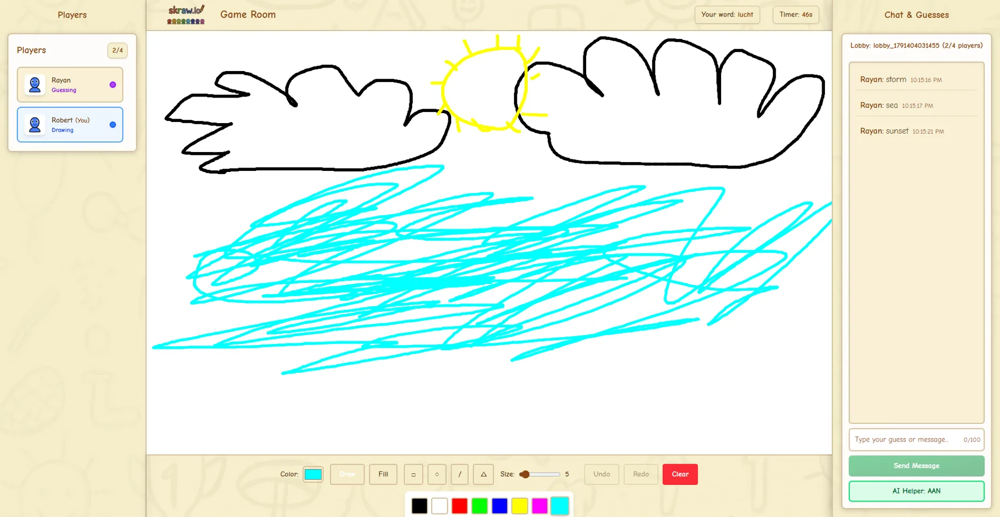

Problem
A simple text countdown offered limited visual feedback about time remaining.
Frontend Development / Multiplayer Game / Team Project
A browser-based drawing-and-guessing game developed as a team project. I focused on early frontend structure, canvas interaction and UX/UI exploration.
This is a team project, not a solo-built game. Multiplayer infrastructure and game functionality were developed collaboratively.

The game
The restored local build was tested with multiple browser sessions. Lobby and ready-state updates, freehand drawing, chat, and correct guesses were observed between clients.
Players join a shared game room and see player updates.
The drawer sees the word; guessers see blank placeholders.
Players send guesses and messages through the chat.
A correct guess is recognized and reflected in player status.
The game is designed to move to another drawer, though the current timer did not reliably advance the round in testing.
Runtime validation
I restored the historical project locally and tested it using two browser sessions. The gameplay screenshot records the real application during that multiplayer test.

Transparency note: In the restored historical build, the timer reached zero without advancing the round, language selection was not applied to gameplay, the AI-helper service was unavailable, and some advanced drawing-tool selections produced runtime errors.
My role
I focused on frontend development and UX/UI within the wider team project. My contribution is distinct from the later shared game and backend implementation.
App.vue layout.CanvasBoard.vue drawing baseline and drawing controls.GameHeader.vue, PlayerList.vue, and general frontend styling.The countdown shown in the gameplay screenshot belongs to the later team build. I do not claim authorship of its current implementation.
Try the interaction
This portfolio-only interaction recreates a simple drawing experience. It is not the original Skraw.io game and does not connect to a server.
Draw with a mouse, touch, or pen. Use the controls above with a keyboard; focus the canvas for a visible focus indicator.
Canvas ready. This demo runs locally in your browser.
UX / iteration
A simple text countdown offered limited visual feedback about time remaining.
I explored timer treatments used in drawing and game interfaces.
I explored multiple timer directions and documented a visual approach.
I contributed to an early timer prototype and collected user feedback on interface clarity and the timer concept.
This describes my earlier exploration and prototype contribution, not authorship of the timer in the current team build.
Team project
The team developed the multiplayer lobby, Socket.IO infrastructure and synchronization, chat and scoring backend, game state, later advanced canvas functionality, and AI-helper wiring. These shared features provide the context for my frontend contribution; I do not claim sole ownership of them.